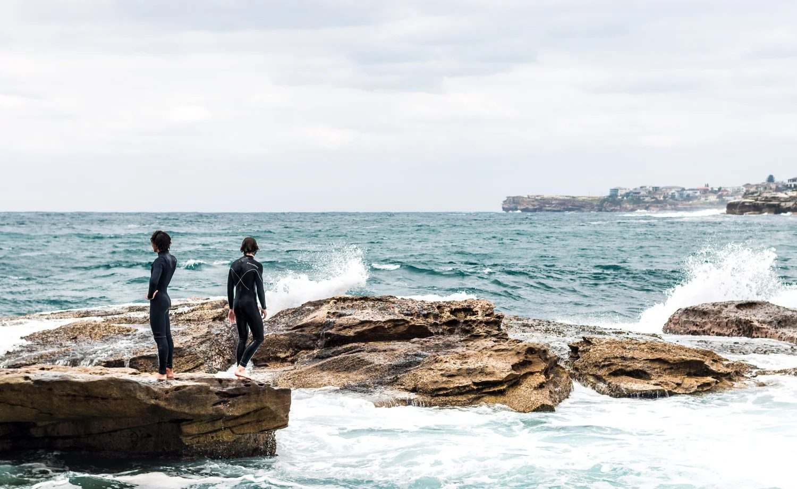
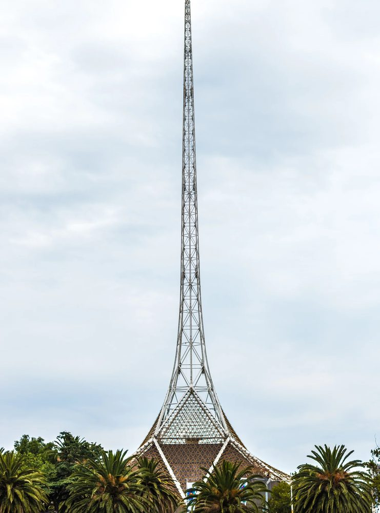
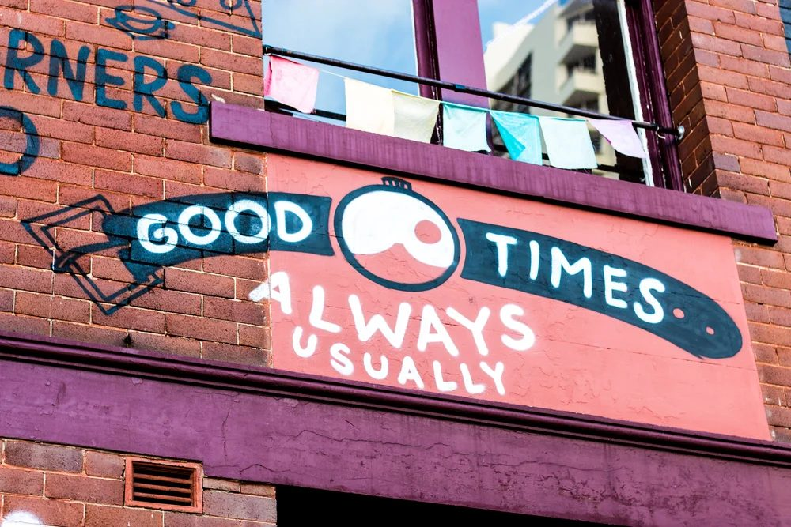

I operate early-stage consumer brands, write flowers at last and take photographs.

flowers at last
vol. xvi / flashing lights
It is Sunday, my favorite day of the week. Saturday is okay, but I always mix up the CT/ET when I see commercials and miss my morning cartoons. Plus, my father refuses to let me watch TV if I am in my pajamas. So I wait to hear his car leave the house on whichever morning errand (DMV, H&R Block, the car wash) and then slip downstairs.
Keep readingvol. xv / ripcord
The motion of a bungee jumper—how it stretches, slowly at first, then increasing. It is in that motion that trust and dependence flows. It's not so standard as to be a Newton's cradle, but at times occasional and sudden, and yet other times fully gradual, like the tides.
Keep readingvol. xiv / on the occasion of your passing
Gray clouds hugged the sun as she rose. The rain, gentle as it was, made the soft earth clump and give way to mud. I fervently wanted this to be more than a simple matter of physics. But I knew it was not. I spent most of the service stone-like but for my shoulders. Only when we lowered you did I double over.
Keep readingvol. xiii / aorist
Have I told you of the night the orchids died moonlight strewed through the window pane, setting alight half the balcony and making forbidden the rest.
Keep readingvol. xii / secondhand
Okay, I’ll admit it. I never really quit. I was always on the verge of quitting, or in the middle of quitting, or having a little cheat day. I gave it up for Ramzan. I went dry for six months.
Keep readingvol. xi / inheritance
Butterflies flit through the garden, and settle into the home; the signature of all these loves is your sehra The garden’s air burst into fragrance with the spring; from the colors of these scents is made this sehra From the branches has risen the moth of our heart; with the light adorning his wings, luminous is this sehra
Keep readingvol. x / crises of confidence
The train had been humming along for nearly half an hour before I opened my eyes. The Eurostar made my typical Northeast regional journey feel drab by comparison. I checked my watch. The gentle tug of the engine and the relative quiet of the cabin had erased the first third of the journey into Paris.
Keep readingvol. ix / love letter to my niece
I tied your hair in pigtails yesterday. It was the first time I’ve done that. I felt accomplished. I didn’t cry. You are the sun to your brother’s moon. No occasion is too small for a throated display of emotion. You are so brave. Never stop climbing rocks.
Keep readingvol. viii / refusing angels
Wilde put it aptly: “Each man kills the thing he loves, yet each man does not die.” I know that I, or my presence, means so much to my parents, yet I choose to stay in New York City to pursue my career, to live my life. And that is ultimately a selfish choice.
Keep readingvol. vii / bleached coral
I close my eyes, leaning my head against the metal frame of the window, my hand cushioning the soft flesh. The headaches are, as always when I travel, back with a vengeance. The prospect of an excursion was, for me, the lesser of two evils. The Disney adults and the endless adulation of characters was beginning to grate at me.
Keep readingvol. vi / setting sail
First, the mass of humanity — hundreds, thousands of people strolling through the port terminal, stopping to admire the diorama of the ship, taking photos and nearing the behemoth that is to be their home for the next week. Castaway Cay tote bags, Elsa dresses, Avengers suitcases, Moana headbands, and of course, Mickey ears. One cannot turn in any direction without spotting a pair of Mickey ears.
Keep readingvol. v / small hands
You are six years old. You are the only son, the only child. The deliverance of your parents’ prayers. You do not know all this. All you know is that other sons play games with their fathers, but you do not. You are six years old.
Keep readingvol. iv / fever dreams
I am lying in bed, the heat of my body burning a hole in the linen. My mind is loud, not orchestra-loud, construction-zone-loud, all whirring and plaster mixed with poetry and melancholy. As soon as a single thread of my conscious brain asserts itself, I turn to follow and it once again is subsumed into the scrum.
Keep readingvol. iii / disappearing acts
Summer sun beating down on the onlookers. Dust and sand in every opening. First one hand – then the other. The crowd does not gasp. And so God, in his infinite wisdom, dies. In the Muslim tradition, this story breaks differently. God, in his mercy, does not allow his faithful servant from Nazareth to hang on the cross. At the moment of impaling, he is replaced. Yet the tears trickle on into the sun-baked desert.
Keep readingvol. ii / hard resets
And so, two months into stay-at-home orders, of counting the blinds on my high school bedroom, on hearing the same neighbor’s dog who would bark, incessantly, throughout the night for 4 of my teenage years, continue his orchestra, I came up with the perfect idea. I would go on a road trip. By myself.
Keep readingvol. i / fresh starts
Hello! And welcome to flowers at last. This is a newsletter about kindness and disappointment, about the gulf between love & understanding, about what it means to believe in spite of. Which is to say: this is newsletter about grace. Which is to say – this is a newsletter about love when it is not called for. Which is to say – this is a newsletter about what it costs to be a hedonist, a hedonist about love, a hedonist about care.
Keep readingphotographs.

